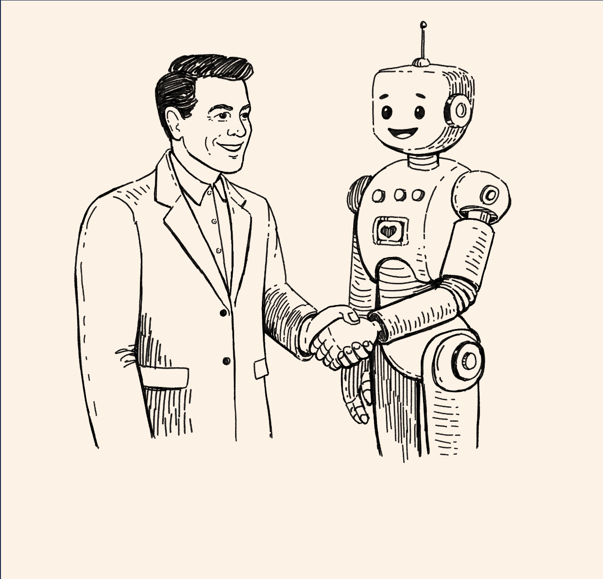
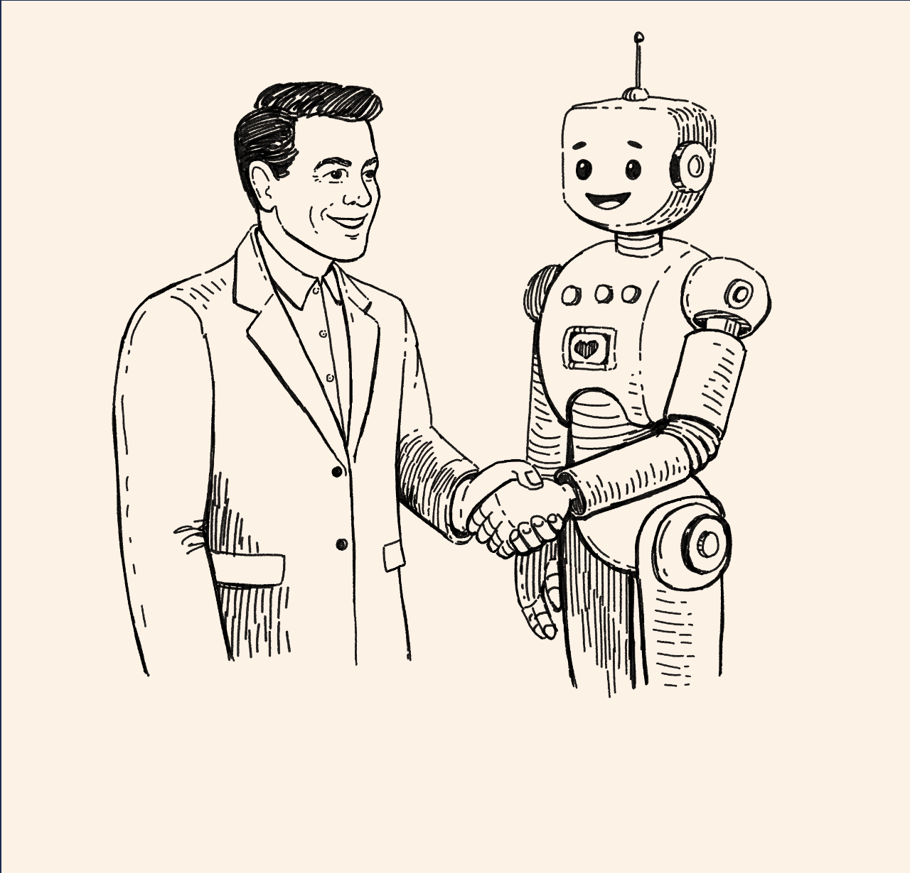

Thanks for checking in...click to read more
I am an associate professor of marketing at the
University of Arizona
with affiliations in psychology, cognitive science, and veterinary medicine.
I am the director of the
Arizona Think Tank for Behavioral Decision Making, and also a visiting professor of marketing at
EGADE Business School.
My research broadly deals with the ways consumers strive for desirable
entities (things, people, pets), how they feel about these entities,
and whether their actions will lead to outcomes such as product
purchases or new relationships.
In one stream of research, I try to understand some of the most
basic psychological and physiological processes of consumer decision
making. In doing so, I find that when consumers encounter deep-seated
bodily signals, they often interpret those as subjective feelings
of yearning and craving, and in turn strive for desirable things.
These signals can be found in positive consumption domains
(hope for financial gains,
love for brands)
as well as negative ones (pain from broken social relationships,
felt betrayal by brands,
self-directed shame),
and lead to strengthened activation of people's
reward system
and weakened activation of their self-control system. Because goods, services, and
experiences possess high levels of reward potency, consumers can be found
to turn to the marketplace to satiate their yearning and craving.
In another stream of research, I focus on how people evaluate other people.
While it is well-known that able people are trusted more, it turns out that
when able people engage in
impression management
this effect is attenuated. It appears that such distrust is primarily
socialized, including through influences from within the family.
Moreover, contrary to the widespread assumption that people do not trust those in power,
it is actually people low in
power
who are significantly more trusting than more powerful people. Also see a
review of work on trust.
Important to me is to study consumers through the lens of different
methods, including asking them about their opinions, attitudes, and
feelings, measuring their neurophysiological responses, and observing
their behavior. I utilize surveys, fMRI, and behavioral experiments to do so.
Check out some tools for designing
surveys
and conducting
functional neuroimaging, as well as materials and data on
OSF. Read more about me and my work on my
faculty webpage. Prospective students feel free to e-mail me.
 
